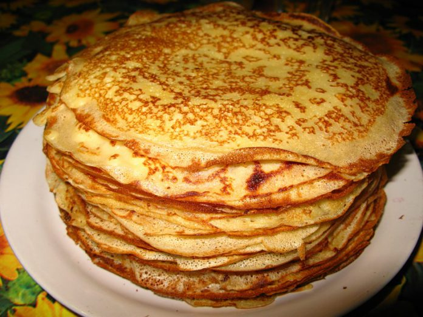

Blini (Russian Crepes)

Description
This recipe is a Russian food eaten especially during the Holiday of
Maslenitsa, or a traditionally pagan holiday to celebrate the coming of
Spring. Very similar to French crepes, they are topped with sour cream
and jam, or rolled with savory fillings like meat or potatoes and cheese.
Ingredients
- Milk (Soy or coconut milk works best for non-dairy option)
- Flour
- Sugar
- Honey
- Neutral Oil, like sunflower
- 2 Eggs
- Pinch of salt
- Butter
Steps
- In a big bowl, combine eggs with half of the milk, honey and salt.
- When fully whisked, add in flour in portions and mix to prevent lumps
- Gradually add in the rest of the milk after the flour. The mixture should be
smooth, and consistency of heavy cream. It should be more on the liquid side.
- Add in the oil on top and mix lightly, and set sit for 20 min.
- Preheat non-stick frying pan on medium heat and great it with some butter.
- Use a ladle to pour in some batter and tilt the pan to cover the bottom with
batter, forming a think layer of crepe. Cook for about 45 seconds, then flip.
- Cook other side until its fully cooked on each side and remove to a plate. Spread
a little bit of butter to prevent sticking. Add more butter to the pan, and repeat
until you have used all the batter.
- Top with sour cream and serve.